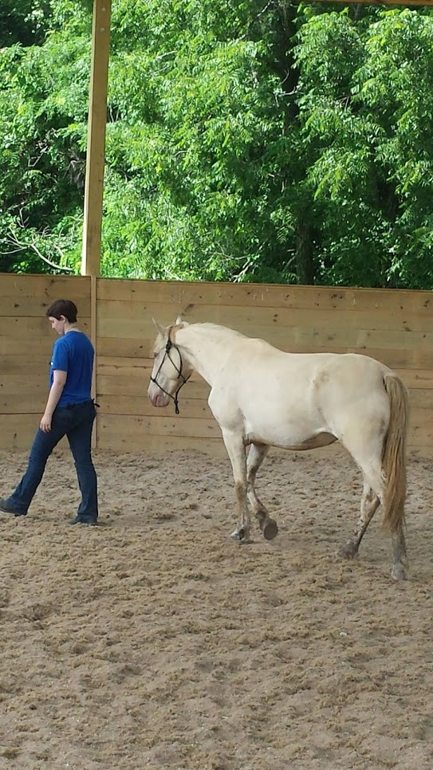
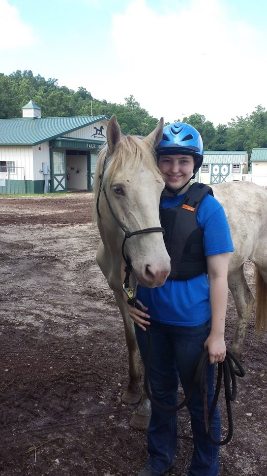
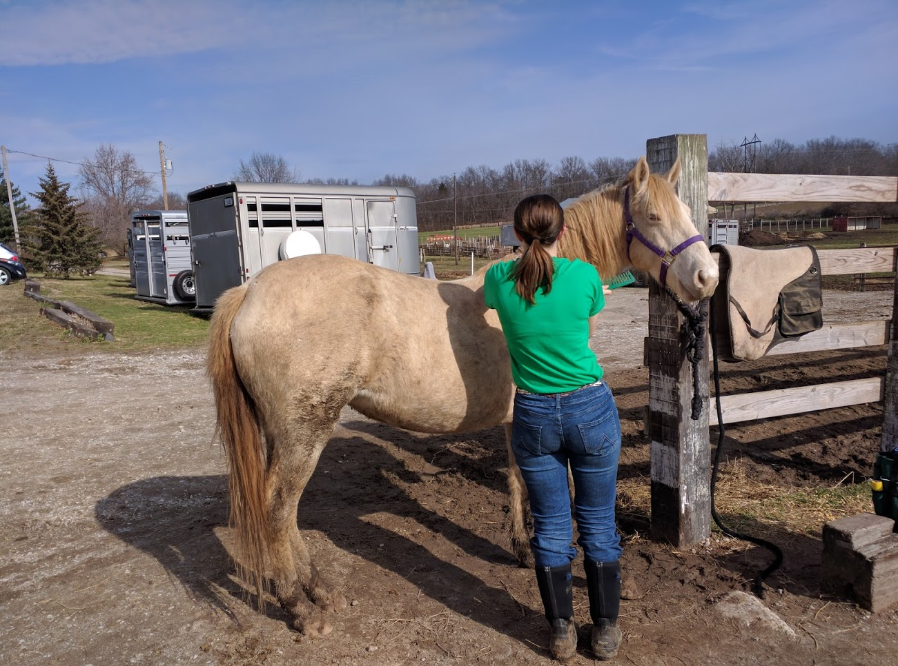
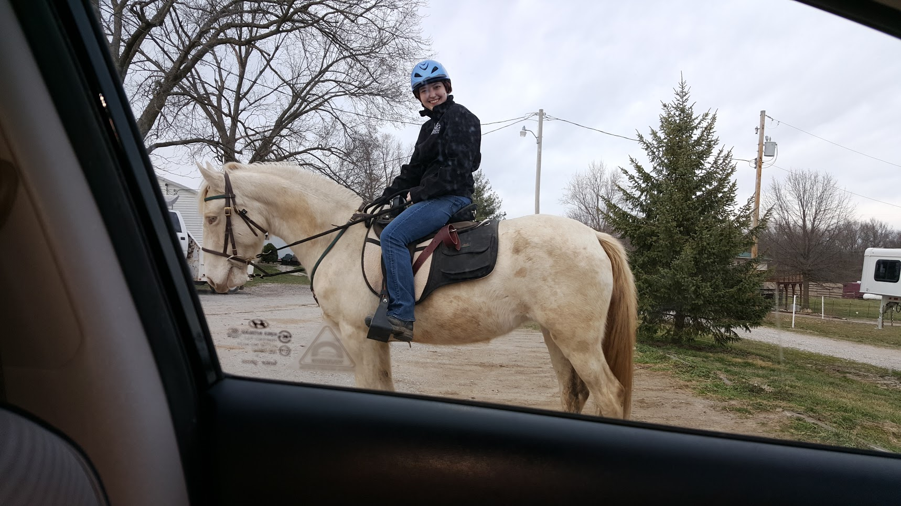
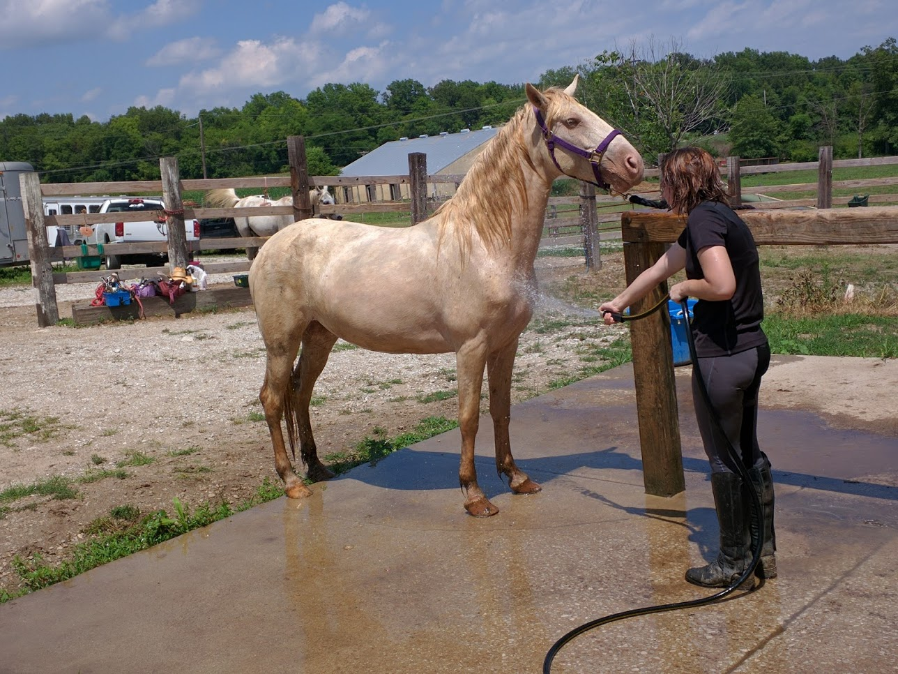
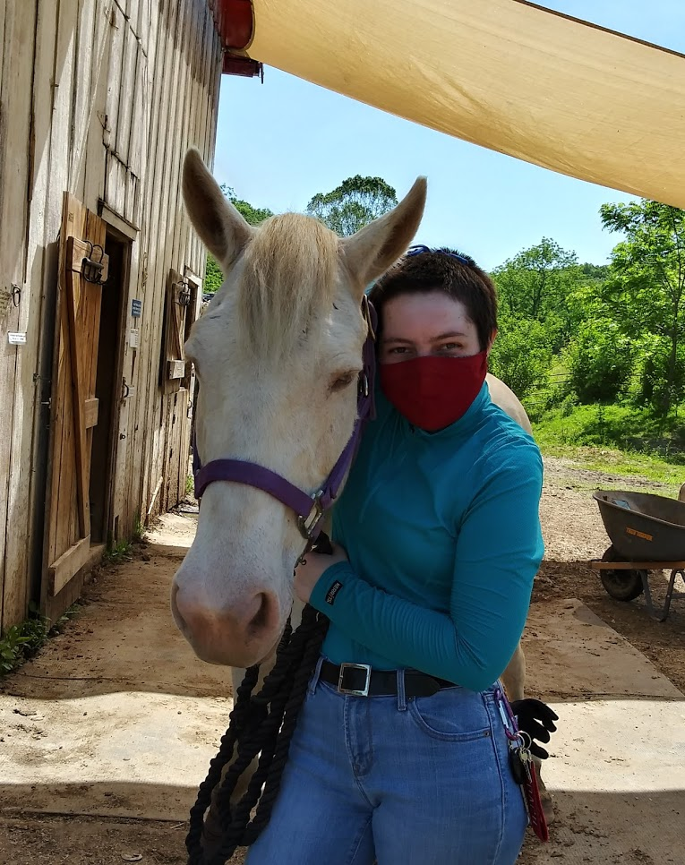

I started volunteering at Longmeadow Rescue Ranch during my junior year of high school as an assistant trainer. In my senior year, a rescue group of about twenty horses came in. There were Thoroughbreds, Quarter Horses — and one mustang.
As I worked with her, I quickly fell in love. Despite having been abused and neglected for about ten years, she was very friendly and willing to learn. Within a week, she was following me around during training.

The Bureau of Land Management—BLM for short—runs the Wild Horse and Burros Program, which frequently rounds up said wild horses and burros for adoption, in an effort to preserve the federally protected animals and keep numbers down in the wild herds.
Each mustang, when captured, is branded with a freezemark. In the spring of 2015, the Extreme Mustang Makeover was held in St. Louis. The program focuses on gentling and training mustangs for adoption, and the BLM oversees the whole process.
I brought Epona's freezemark to the expo, and the BLM officials were able to look up her records. Since her first adopter of record abandonded her, the BLM agreed to transfer her title for adoption to Longmeadow, instead of just repossessing her.
When I graduated from high school, my parents told me what I had been wanting to hear for years — they would help me adopt a horse! Obviously, I chose Epona.

We worked with my trainer for the rest of the summer, and when I went off to college, Epona came with me.
The College Experience
One of the benefits of going to Truman State University was the agricultural program—specifically, they had a stable where I could board Epona for the duration of the school year. In addition to my regular schooling, I would continue working with Epona.
I had to learn how to speak her language with my body, and she had to understand that I was in charge. This is still a work in progress.
Coming Back Home
After coming back home from Truman, it took us a while to find a good place for us both. At first, we boarded at The Riding Center, out in Freeburg, IL. There, we worked under Sarah Sanders, our trainer from Longmeadow, to better understand each other.

A very muddy Epona who is very pleased with herself.

Just back from a chilly trail ride.

Epona is still not fond of bath time.
We remained there for a while, enjoying the trails and the time we trained together, but eventually the distance got the better of us. I began to look for somewhere closer to home.
Holistic Horsemanship Institute of America
I discovered the Holistic Horsemanship Institute of America via a tack shop bulletin board, and decided to check it out. I dropped by unannounced in the middle of February 2020, just before COVID-19 reached pandemic status in the US.
The owner, Lisa, is a close friend of Sarah's, has many rescues in her herd already, and developed her own methods of training and interacting with horses. She gave me a tour of the facilities, told me what I could expect while I boarded with her, and then gave me a free trial lesson.
I loved the whole experience, and moved Epona there at the end of the month. Of course, within a few weeks, everyone in the state was under a quarantine order, and I didn't see Epona for almost six months!

Reuniting after a long quarantine.
We're still getting back into the swing of things, and we've definitely still got work to do, but Epona and I have come a long way from that roundpen.